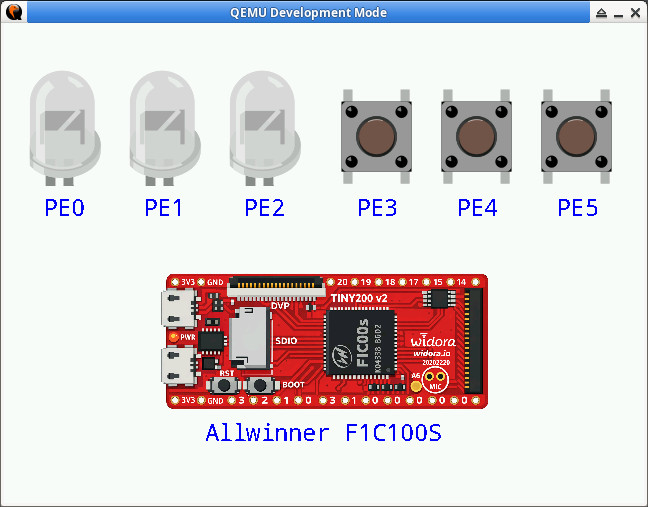

參考資訊：
https://github.com/steward-fu/qemu
https://github.com/newluhux/qemu-f1c100s
$ cd $ git clone https://github.com/steward-fu/qemu $ cd qemu/qemu $ ./configure --target-list=arm-softmmu,i386-softmmu --enable-sdl1 $ make -j4 $ QEMU_DEV_MODE=1 ./build/qemu-system-arm -M f1c100s -display sdl1
